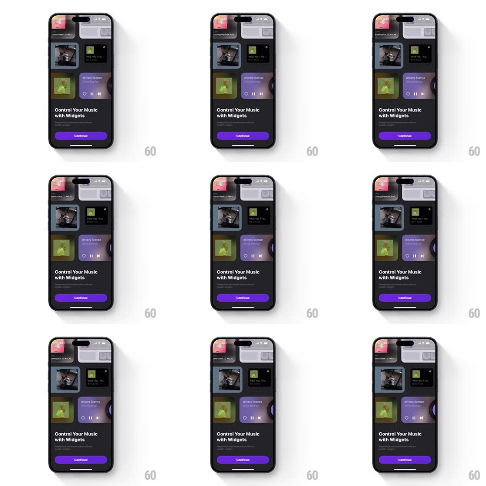

Media
Frame-by-frame

Rebuild this interaction 1:1: MD Vinyl's widgets showcase - on the dark "Control Your Music with Widgets" onboarding page, a multi-column grid of home-screen widget mockups (album tiles, a purple now-playing widget, lock-screen widgets) auto-scrolls upward in staggered columns, each column drifting at its own speed in an endless loop.

Rebuild this interaction 1:1: MD Vinyl's widgets showcase - on the dark "Control Your Music with Widgets" onboarding page, a multi-column grid of home-screen widget mockups (album tiles, a purple now-playing widget, lock-screen widgets) auto-scrolls upward in staggered columns, each column drifting at its own speed in an endless loop. ## Integration Integration: stack-agnostic spec - springs given as stiffness/damping, timed motions as duration + curve; map every value to your framework and animation library of choice. ## Scene Dark onboarding page: the top two-thirds hold a tilted, edge-cropped grid of widget cards (album art squares, a wide purple "drivers license" player widget, small lock-screen widgets), fading out at top and bottom edges; below, the headline, subline, and purple Continue pill. ## Motion spec Pattern: infinite multi-column marquee. - Each column scrolls upward continuously at its own constant velocity (outer columns ~20px/s, middle column ~30px/s), looping seamlessly - content wraps from top back to bottom. - The grid sits at a slight perspective tilt (rotateX ~8deg) with edge fade masks top and bottom (~40px gradient) so widgets dissolve in and out. - Widgets inside are live: the player widget's progress bar creeps, album art glows - small internal motion inside the drifting grid. - The motion never pauses, reverses, or reacts to touch on this page - it is ambience behind the CTA. ## Calibration - Column speeds differ but must divide evenly into the loop length - the pattern never visibly jumps at the wrap. - The tilt and fades do the depth work; there are no shadows between cards. ## Reduced motion Static grid, no scroll; widget internals freeze. ## Don't miss - The grid is cropped by the screen edges on both sides - it reads as a window onto a bigger wall. - The purple player widget is the hero card - brightest element in the grid.